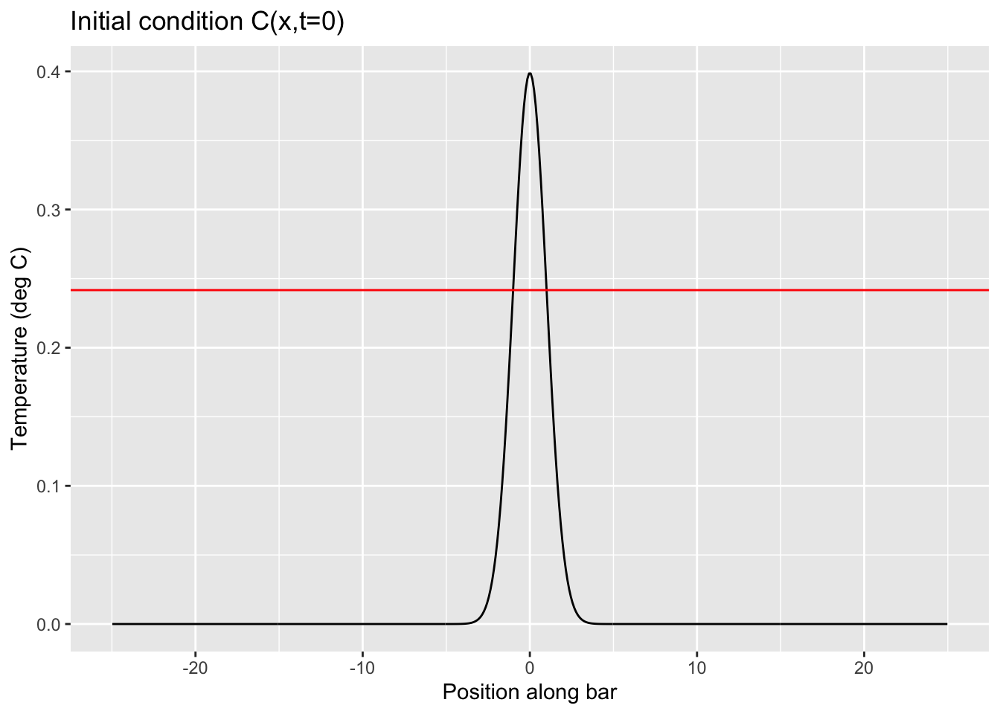
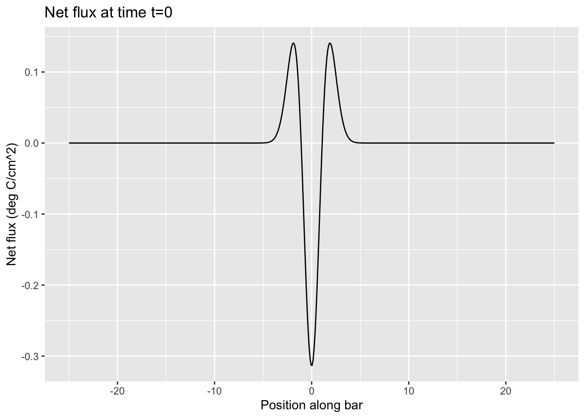
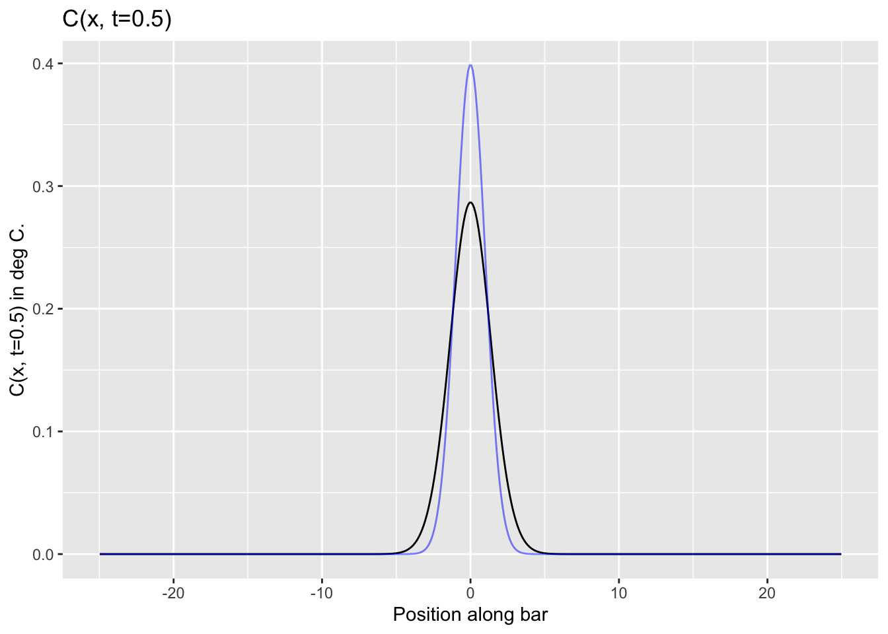
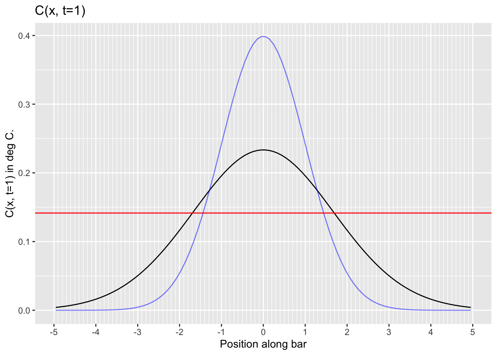
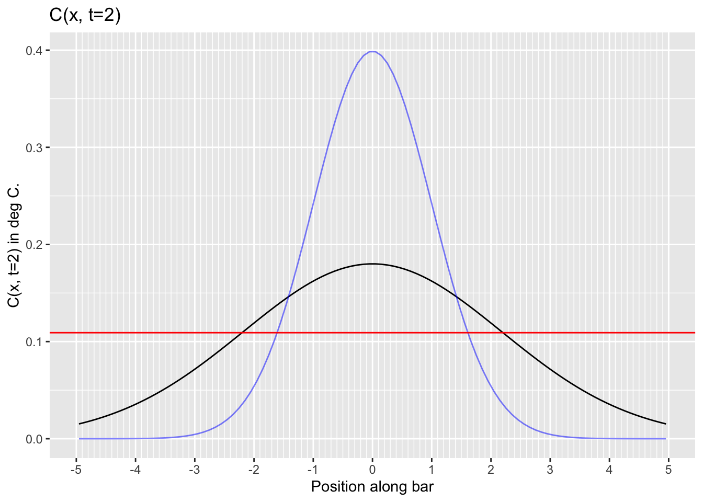
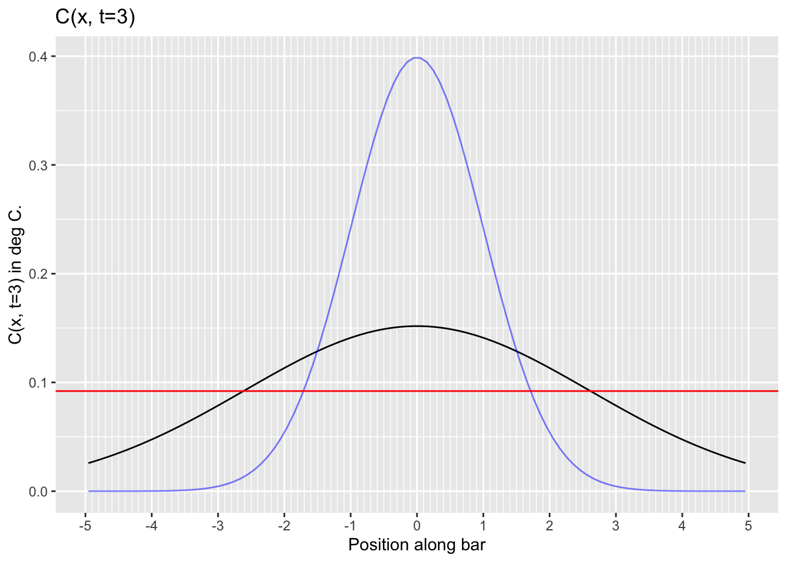

Dynamics of variance
Daniel Kaplan
In this section, we’ll explore the connection between diffusion and the gaussian function. Recall that we modeled the temperature along a one-dimensional spatial domain (a “bar of iron”) as it evolves in time as a function of both position and time: \(C(x, t)\). The same sort of function—of position and time—can be used to describe the concentation of particles freely diffusing along a medium such as air in a pipe.
We constructed a differential equation to describe the dynamics of \(C(x, t)\) called the “heat” equation or the “diffusion” equation, depending on context. Before using that differential equation, let’s explore a little bit what we might mean about the “dynamics of a function.”
In studing dynamics we worked first with time taken discretely, e.g. a sequence of states \({\mathbf x}_0\), \({\mathbf x}_1\), \({\mathbf x}_2\), \(\ldots\), \({\mathbf x}_n\), \(\ldots\). The vector \({\mathbf x}_n\) is the “state” of the system at time step \(n\). In our work, we looked at 1-dimensional and 2-dimensional states, tracing out a trajectory from one time step to the next and the next and so on. Exactly the same ideas would apply to 3- and higher-dimensional states, say an ecosystem involving growing grass, and populations of mice, rabbits, foxes, birds, and so on.
In our present context, heat and diffusion, we are working with functions. In the discrete-time context, imagine that the instantaneous temperature at times 0, 1, 2, 3, \(\ldots\), n, \(\ldots\) by the functions \(C_0(x)\), \(C_1(x)\), \(C_2(x)\), \(\ldots\), \(C_n(x)\), \(\ldots\). Metaphorically, we have a movie, each frame of which shows a simple graph of a function \(C(x)\). In frame \(n\) of the movie, the specific function shown is labeled \(C_n(x)\).
To describe the dynamics—that is, the change from frame to frame in the movie—we write a finite-difference equation, generically: \[C_{n+1}(x) = f(C_n(x))\] In the movie of diffusion, that equation will be this:
\[C_{n+1}(x) = C_n(x) + \alpha\, \partial_{xx} C_n(x)\] The term \(\partial_{xx} C(x)\) tells us the net flux of heat/particles into the point \(x\).
In English, this says, “The amount of heat/particles at \(x\) in one frame of the movie is the amount that was there in the previous frame plus the net flux of heat/particles from the neighboring points.”
Now imagine making the movie using an ultra-high-speed camera that takes a new frame every \(h\) microseconds. We’ll label the time of one frame as \(t\) and the time of the next frame as \(t+h\). The frame-to-frame change is therefore \[C_{t+h}(x) = C_t(x) + h\, \alpha \partial_{xx} C_t(x)\] We can equally we’ll write \(C_t(x)\) as \(C(x, t)\), our notation for functions on a continuous domain. Doing this, and re-arranging the formula, gives: \[\frac{C(x,t+h) - C(x,t)}{h} = \alpha \partial_{xx} C(x, t)\] The left side of this equation is the differencing operator applied to \(C(x, t)\) (with respect to \(t\)). In the limit as \(h\rightarrow 0\) (that is, as you turn the video frame rate faster and faster) we can replace the left side of the equation with the partial derivative \(\partial_t C(x,t)\). That’s the heat/diffusion equation.
We’re going to find the solution \(C(x,t)\) to the differential equation using Euler’s method. In other words, we’ll make movies of the functions \(C_t(x)\) one frame at a time. We know the dynamics; to start we need is an initial condition, the function \(C_0(x)\).
Imagine we have a freezing-cold iron bar and, at time \(t=0\), we place a white-hot coal on the center point, heating it to 1600 (deg C) and then removing the coal. The initial condition looks like this:

The red horizontal line is positioned to enable you to read off the standard deviation of the bell-shaped function.
The next frame of the movie will show \(C_h(x)\). To construct that, we’ll compute the net flux into each point on the bar.

You can see that there is a strong net flux out of the center point and a net flux in to neighboring regions: the heat will be spreading out. Far from the center point, the net flux is zero. In the next graphs, we’ll zoom in on the center of the domain, \(-2.5 \leq x \leq 2.5\).
To find the next Euler step, that is, the function \(C_h(x)\), we add the net flux (scaled by \(h \alpha\)) to \(C_0(x)\). As usual, we take one Euler step after the other to reach whatever time \(t\) we want.
Here is the solution \(C(x, t=0.5)\) shown with \(C(x, t=0)\) superimposed in blue. (We set \(\alpha=2\) and used 5 Euler steps with \(h=0.1\).)

At time \(t=0.5\) , the temperature at the center has gone down. Less obviously, \(C(x, h)\) is a tiny bit wider than \(C(x,t=0)\). That is, heat has spread out a bit from the center.
Here is the function \(C(x,t)\) at \(t=1, 2, 3, 4\). You can see the function spreading out as \(t\) increases. We’ve zoomed in on the x-axis to where the action is.

Here is a similar set of graphs for \(t=10, 20, 30, 40\):